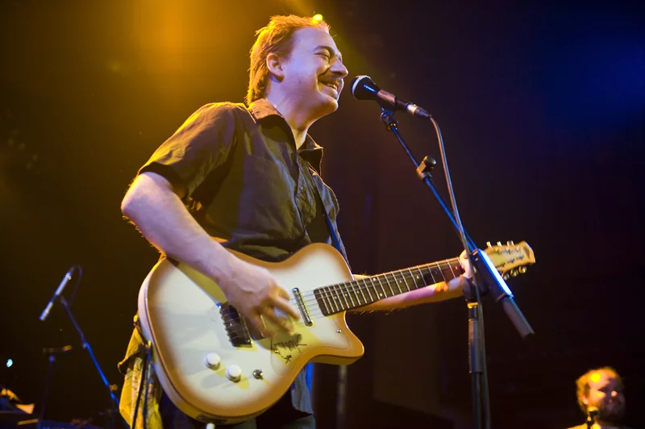
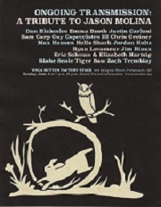

Jason Molina

Performing in 2009
Timeline:
- 1973 - Born in Oberlin, Ohio
-
1983 - Began playing guitar
-
1992 - Graduated from high school in Lorain, Ohio
-
1995 - Formed the band Songs: Ohia
-
1996 - Graduated from Oberlin College with a BA in Art History
-
1997 - Released first full-length album
-
1996 - Graduated from Oberlin College with a BA in Art History
-
2003 - Renamed band Magnolia Electric Co.
-
2009 - Released final album and stopped performing
-
2013 - Died at age 39 of alcohol abuse-related organ failure
Tributes and Videos:

Selected Discography:
Songs:Ohia
- 1997 - Songs: Ohia
- 1998 - Impala
- 1999 - Axxess & Ace
- 2000 - The Lioness
- 2000 - Ghost Tropic
- 2002 - Didn't It Rain
- 2003 - The Magnolia Electric Co.
Magnolia Electric Co.
- 2005 - Trials & Errors
- 2005 - What Comes After the Blues
- 2006 - Fading Trails
- 2007 - Sojourner
- 2009 - Josephine
Solo
- 2004 - Pyramid Electric Co.
- 2006 - Let Me Go, Let Me Go, Let Me Go